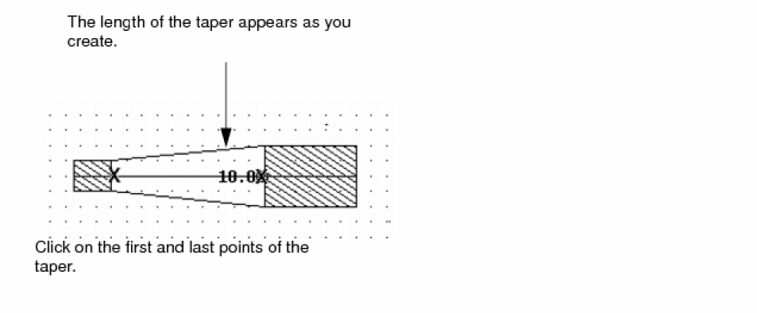

12
Microwave Commands
This chapter contains these topics:
- About Microwave Layouts
- Creating Transmission Lines
- Creating Bends
- Creating Tapers
- Transmission Line Bend Examples
About Microwave Layouts
Microwave layouts consist of placed component instances such as resistors, capacitors, inductors, and transistors, and the interconnects drawn to connect the components.
You can connect components in a microwave layout with regular layout geometries such as polygons, rectangles, and paths, as well as microwave specific geometries: transmission lines, bends, and tapers.
You use the microwave commands to create
Editing Transmission Lines
You can edit microwave objects with the layout editor commands similar to the way you edit paths. You use these commands to
Creating Transmission Lines
The Trl command lets you create a transmission line.
To display the Transmission Line form,
Transmission lines (trl’s) show connections in microwave designs. You create trl’s the same way you
To create a transmission line:
-
Choose Create – Microwave – Trl.
The Transmission Line Form appears. - Set Bend Style to bend.
-
Set Bend Factor to
1. -
Set the width to
2. -
Click to create each point of the trl.

-
To complete the trl, double-click the last point.
Creating Bends
The Bend command lets you create a two-segment transmission line with two different width settings. Bends connect objects of different sizes, using a right-angle segment instead of a straight line. You create bends similar to the way you
-
Choose Create – Microwave – Bend.
The Transmission Line Bend Form appears. -
Type the beginning and ending widths of the bend.
-
Click to enter each point of the bend.
This is a completed bend.
Creating Advanced Transmission Lines
The Bend Style option lets you customize the corners of your transmission lines into standard
-
In the Transmission Line Bend Form or in Transmission Line Form, choose Bend Style and type the corresponding factor to use.
- Click each of the three points of the bend.
Creating Tapers
The Taper command lets you create a one-segment transmission line that connects two transmission lines of different width settings.
You create tapers similarly to the way you
-
Choose Create – Microwave – Taper.
The Transmission Line Taper Form appears. -
Type in the beginning and ending widths of the taper.
-
Click to create each point of the taper.
This is a completed taper.
Transmission Line Bend Examples
Standard Bend Examples
This illustration shows a standard bend. All angles in a standard bend are 90 degrees.
Bend Factor is the allowed ratio of the width (WMAX) of the bend for a given angle to the width (W0) of a 90-degree bend. If the width (W) of a bend is greater than WMAX, the bend is chamfered so that the width is decreased to WMAX. The effect of Bend Factor is shown in the following illustrations.
90-Degree Bend with Width W0
Specified Value of Bend Factor Defines WMAX
For W>WMAX, bend chamfered to decrease W to WMAX
Chamfer Examples
The types of chamfer bends and the effect of Chamfer Factor are shown in the following illustrations. The appearance of the corner is determined by the value of the chamfer factor, d1/d2.
Example 1

Example 2
Example 3
Example 4
Radial Examples
A radial bend has a rounded corner determined by the Radius Factor. The Resolution is the number of segments in a 180-degree bend.
Bends must be properly formed. For example, segments adjacent to a bend must not be too short with respect to the bend. To prevent this, the layout editor does not allow a bend on adjacent segments to extend past the midpoint of the shortest adjacent segment.
In other words, the bend and the segment must coincide before or at the midpoint of the segment so that segments approaching the midpoint from opposite directions match at the midpoint. These segments must intersect the midpoint at 90 degrees. If necessary, the layout editor alters the bend to satisfy these conditions.
Return to top